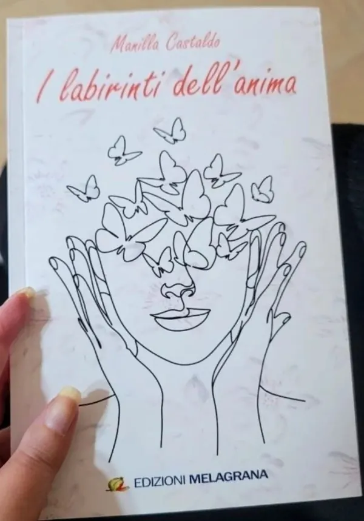
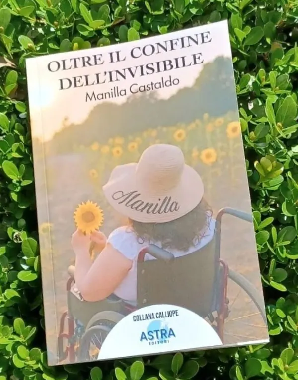

I labirinti dell'anima
Manilla Castaldo
Edizioni Melagrana
Una raccolta di poesie che attraversa emozioni, ricordi, fragilità e rinascite.
13,00 €
Acquista su WhatsApp «I labirinti dell'anima» (si apre in una nuova scheda)
Manilla Castaldo
Edizioni Melagrana
Una raccolta di poesie che attraversa emozioni, ricordi, fragilità e rinascite.
13,00 €
Acquista su WhatsApp «I labirinti dell'anima» (si apre in una nuova scheda)
Manilla Castaldo
Astra Editori · collana Calliope
Ci sono emozioni che non si vedono, silenzi che raccontano e pensieri che spesso non trovano voce.
13,50 €
Acquista su WhatsApp «Oltre il confine dell'invisibile» (si apre in una nuova scheda)